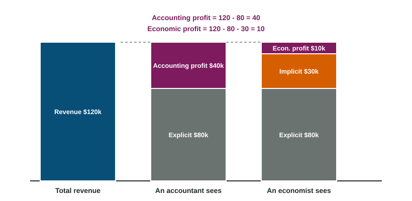

Types of Profit
Accounting profit subtracts only explicit costs from total revenue.
Part 1 · Hook
Why this matters
Part 2 · Before you start
What this builds on
Part 3 · Prerequisite check
Quick check before you start
1. The salary a business owner gives up to run her own shop is
- an implicit cost
- an explicit cost
- a sunk cost
- a variable cost
Show the answer
No money is paid, but she gives up that income: an implicit cost.
- Correct: an implicit cost:
- an explicit cost:
- a sunk cost:
- a variable cost:
2. Total revenue is
- price times quantity sold
- price minus cost
- quantity minus cost
- the cost of one more unit
Show the answer
TR = P x Q.
- Correct: price times quantity sold:
- price minus cost:
- quantity minus cost:
- the cost of one more unit:
Part 4 · See it
See it first

Part 5 · Step by step
How it works, step by step
- The owner uses her own time and savings in the businessshe gives up the salary and interest they could earn elsewhere: implicit costs
- Economic profit subtracts those implicit costs as well as explicit costseconomic profit is smaller than accounting profit
- Economic profit is positivethe business pays more than the owner's best alternative
- Resources earn more in this industry than elsewhereother entrepreneurs are drawn to it
Part 6 · Key ideas
Key ideas
- Accounting profit = total revenue - explicit costs.
- Economic profit = total revenue - explicit costs - implicit costs = accounting profit - implicit costs. Below zero it is an economic loss.
- Normal profit is zero economic profit: revenue covers every opportunity cost, so the owner does as well as in her next-best choice.
- Economic profit, not accounting profit, signals whether resources earn more in an industry than elsewhere.
Part 7 · Misconception
A common mistake
The wrong idea: A firm with zero economic profit is making no money and should close.
What actually happens: Zero economic profit is a normal profit: the firm has an accounting profit equal to its implicit costs, so the owner earns exactly what her best alternative would pay.
Part 8 · Check yourself
Check yourself
Exam-style questions. Anything you miss goes into your review queue.
1. Accounting profit is
- total revenue minus explicit and implicit costs
- total revenue minus explicit costs
- total revenue minus implicit costs
- explicit costs minus implicit costs
Show the answer
Accounting profit = total revenue - explicit costs. Economic profit also subtracts implicit costs.
- total revenue minus explicit and implicit costs: That is economic profit.
- Correct: total revenue minus explicit costs: Right: an accountant subtracts the money actually paid out.
- total revenue minus implicit costs: Accounting profit subtracts explicit costs, the money paid out.
- explicit costs minus implicit costs: Profit starts from revenue.
Scenario
Rosa Quill's bakery: explicit and implicit costs
Rosa Quill quit a job that paid $45,000 a year to run her own bakery, Quill and Crumb. She also put $50,000 of her savings into the business; in a savings account that money would have earned $2,000 a year in interest. Last year the bakery took in $180,000 in revenue and paid $30,000 in rent, $50,000 for ingredients and $40,000 in wages to two employees. (An invented business, for practice.)
2. In the scenario, what was the bakery's accounting profit last year, in dollars?
Type a number. A four-function calculator is allowed, as on the exam.
Show the answer
Accounting profit = total revenue - explicit costs =
- Answer: 60,000
3. In the scenario, what were Rosa's implicit costs last year, in dollars?
Type a number. A four-function calculator is allowed, as on the exam.
Show the answer
Implicit costs are the income Rosa gave up: the $45,000 salary plus the $2,000 of interest,
- Answer: 47,000
4. In the scenario, what was the bakery's economic profit last year, in dollars?
Type a number. A four-function calculator is allowed, as on the exam.
Show the answer
Economic profit = revenue - explicit costs - implicit costs =
- Answer: 13,000
5. In the scenario, what does the bakery's economic profit tell Rosa?
- She would earn more by going back to her old job
- The bakery just covers its explicit costs
- The bakery beats her next-best choices
- Her accountant has overstated the bakery's costs
Show the answer
Economic profit counts every opportunity cost. A positive economic profit of $13,000 means the bakery pays Rosa more than her best alternatives combined.
- She would earn more by going back to her old job: Her economic profit is positive, so the bakery beats the $47,000 she gave up.
- The bakery just covers its explicit costs: It covers its explicit costs by $60,000, and its implicit costs too.
- Correct: The bakery beats her next-best choices: Right: positive economic profit means she beats the job and the savings account.
- Her accountant has overstated the bakery's costs: The accountant leaves out implicit costs; economic profit adds them.
6. A restaurant earns zero economic profit. Which statement is correct?
- It has no revenue left after paying its bills
- Its owner should close it at once
- Its accounting profit is zero too
- Its owner earns what she would elsewhere
Show the answer
Zero economic profit means revenue covers every cost, including the owner's opportunity costs. The owner earns a normal profit, and no other use of her time and money pays more.
- It has no revenue left after paying its bills: It has accounting profit equal to its implicit costs.
- Its owner should close it at once: With normal profit, she does as well here as anywhere.
- Its accounting profit is zero too: Accounting profit equals the implicit costs, which are above zero.
- Correct: Its owner earns what she would elsewhere: Right: zero economic profit is a normal profit.
7. Make the explanation specific: a firm shows an accounting profit of $30,000, and its owner gave up a $40,000 job to run it. Fill in each blank.
Build the answer part by part, then write it in your own words.
Show the answer
Economic profit = accounting profit - implicit costs =
- An answer that earns the point: Economic profit also subtracts implicit costs, so because the owner's forgone salary of $40,000 is larger than the $30,000 accounting profit, economic profit is less than zero: an economic loss of $10,000.
Part 9 · Summary
Summary
Part 10 · Up next
What comes next
Part 11 · Connections